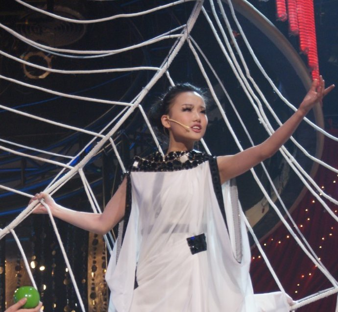
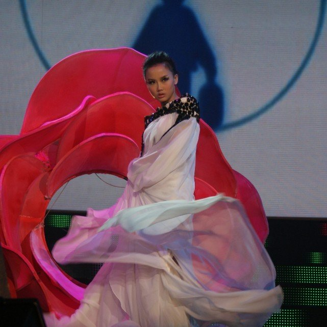
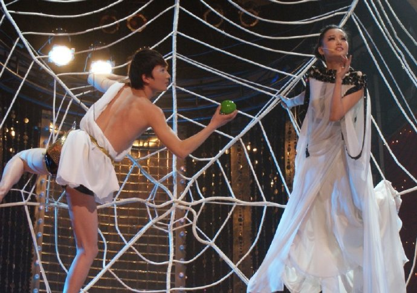
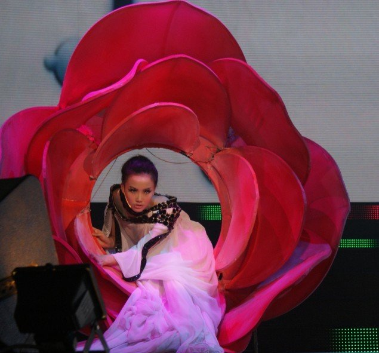
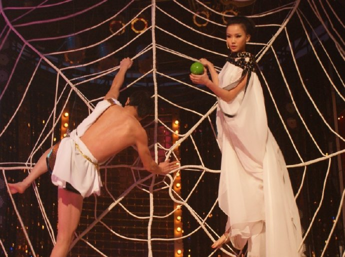
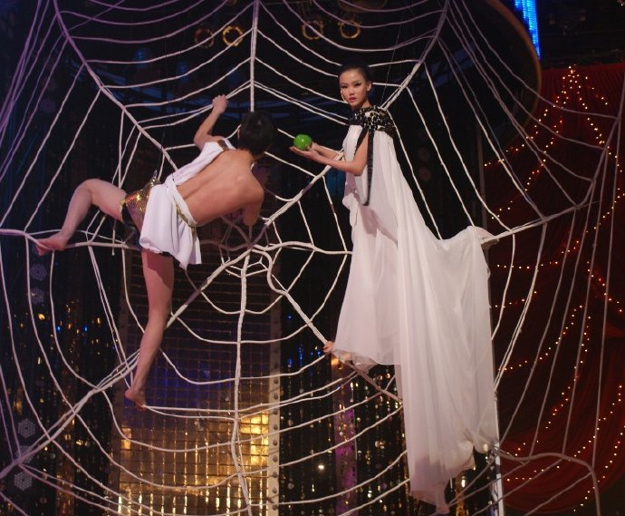
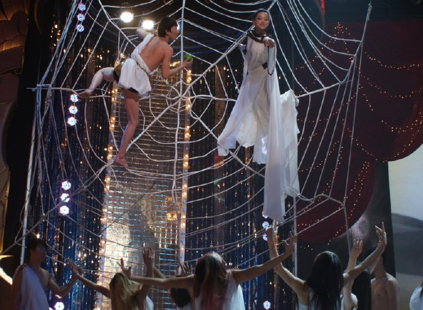
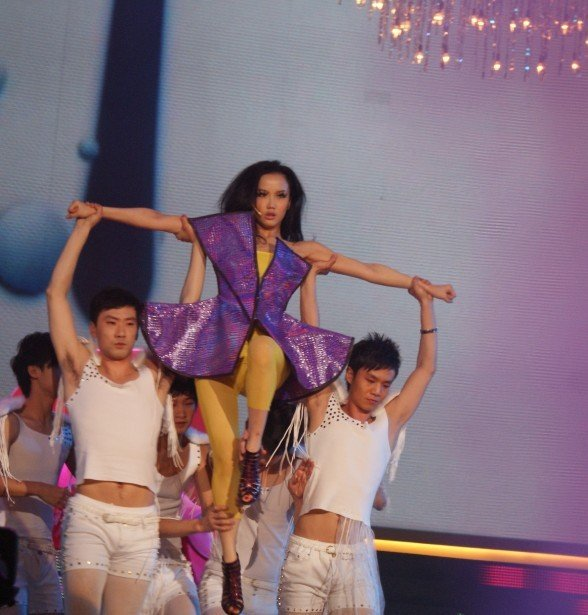

在录制安徽卫视的跨年晚会《非常静距离》的歌会的时候，舞台上有一个巨大的蜘蛛网，我吊着威亚慢慢升上去，穿着希腊女神一样洁白的衣服，拿着绿色的苹果，在上面唱着缠绵悱恻的《痒》。虽然之前拍广告也吊过威亚，但是这次心里还是怕怕的。不仅要站稳，还要美美的在蜘蛛网上妩媚，装出柔然无力的样子。其实我的腰可是死死的撑着，非常的用力，手臂也紧紧的勾着蜘蛛网，下来的时候手臂都淤青了。不过看照片觉得很美，心里也很美。
后来唱《High歌》的时候，我从一朵大大的红花里面走出来，这次的晚上肯定会跌破你们的眼镜，不仅听觉上让你过瘾，视觉一定要冲击到你。谁让Lady Gaga这么红啊！播出时间是1月1日，安徽卫视。